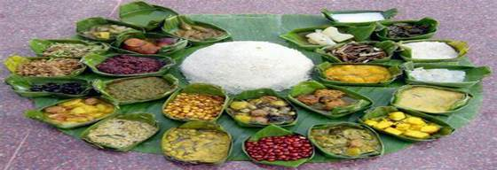
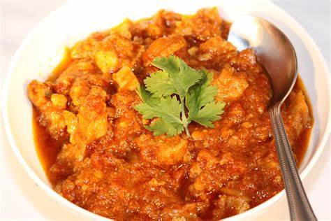
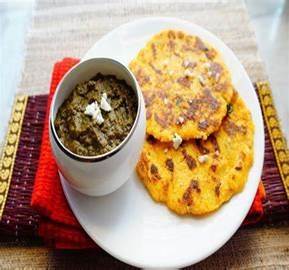
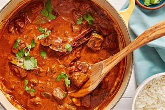
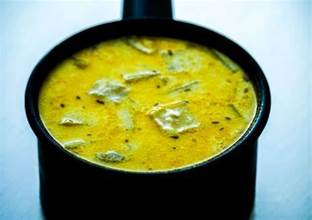

CUISINES OF
STATES
MANIPUR
Manipuri cuisine reflects the geographical, social and cultural
specialities of the North-Eastern part of India. This region has a close
connection with the nature, which is well-seen in their way of cooking. With a
mix of flavours ranging from plain to pleasant, Manipuri food is an extreme
delight to the taste buds.
Vegetables are mostly grown at home or bought from the local
market. As a result of this, the ingredients are fresh and the dishes are
seasonal. The common vegetables that are commonly found here include pumpkins,
various kinds of beans, gourds, brinjals, etc.
Apart from this, vegetables like yendem (a kind of taro), kolamni
(water spinach), thangjing (foxnut), koukhaa (katniss), yongchak (a variety of
bitter beans), sougri (roselle leaves), ngari (a fermented and dried fish) are
an important source of a major portion of the food cooked in this place.
A typical Manipuri meal normally consists of:
●
Steamed rice
●
Kangsoi (a vegetable stew with ngari)
●
Ooti (a thick curry made of peas, chives and beans)
●
Nga Atoiba Thongba (a curry made of fish)
●
Kanghou (stir-fried vegetables)
●
Eromba (a mash of boiled vegetables, ngari and chilli)
●
Singju (a salad made of seasonal vegetables)
●
Morok metpa (a paste of roasted chilies, ngari and garlic).
●
Chakhao (a pudding made of black rice)

In the cuisine of Manipur, the most popular way of cooking
includes boiling and steaming. Oil is not extensively used. Aromatic spices are
a significant component, which not only provide nutrition, but also many
medicinal values. These are called Maroi.
Goa is one of the most beautiful and most popular tourist
destinations in India, not only because of beaches, but also for its pleasant
weather, happening nightlife, thrilling water activities, delicate cuisine and
more. The unique cuisine of Goa developed out of a merger of various cultures
that it met over the centuries such as the Portuguese, Arab, Brazilian,
African, French, Konkani, Malabari, Malaysian and Chinese. The three major
communities of Goa - Hindus, Muslims, and Christians, contribute to the
culinary tradition in their own manner.
The cuisine of Goa is mostly dominated by seafood which includes
shark, tuna, pomfret, and mackerel fish. Most of the dishes incorporate
coconuts, rice, fish, pork, meat, and local spices like kokum. Some of the
popular dishes include: -
1. Goan Fish Curry
Goan fish curry or the Xitti Kodi is the staple diet of every Goan
making it a famous food of Goa. This curry is a warm and tangy fish curry
cooled with coconut milk. It is loaded with various spices along with coconut.
Serve this spicy Goan fish curry with some hot steamed rice for a treat to your
taste buds.
People who have it once, prepare it all at their places all around
the world. But who’d know better than the Goan locals themselves? Their typical
recipe is:
●
· 1 Tbsp coconut oil, or vegetable oil
●
· 1 onion, finely chopped
●
· 2 garlic cloves, crushed
●
· 1-inch fresh ginger, grated
●
· 2 tomatoes, diced fine
●
· 1 c coconut milk, (regular or light)
●
· ½ c water
●
· 2 mild green chilies, cut into strips
●
· ¾ lb. firm white fish, (pollock, cod, haddock), cut into 1-inch
pieces
●
· 1 Tbsp white vinegar
●
●
Masala Spices include- Ground coriander seeds, cumin, paprika,
turmeric, salt, mustard seeds and cayenne powder.
2. Pork Vindaloo
Derived from the Portuguese words for garlic (alho) and wine
(vinho), combined in a marinade, this spicy Goan curry originated from a
Portuguese sailor’s dish made with – yes, that's right – pork, garlic and wine.
Traditional Goan pork vindaloo is FLAVOURed with chiles, garlic, and vinegar.
It's hot, spicy and tangy at the same time, and it will leave your taste buds
tingling for more!
All ingredients used in its making are those, available in any
part of the country; a few dried Kashmiri chiles, some toasted whole cumin
seeds, turmeric, peppercorns, cloves, a little sugar, garlic flakes, a small
piece of ginger, half a cup vinegar, a spoon of vegetable oil along with some
water.
Local masala is prepared using the chilies and other ingredients
and is then mixed with meat and vinegar. This mix is kept aisde overnight. The
dish is then fried using onions and other herbs.

PUNJAB
One of the most impressive things about Punjabi food is
its variety. While meat lovers can never have enough of the evergreen Butter
Chicken, Bhuna Gosht, Tandoori Chicken and Amritsari Macchhi (fish), vegetarian
fare is equally delightful. Sarson ka Saag, Chole Bhature and Dal Makhni are
just a handful of vegetarian Punjabi specialities with fans across the
globe. Think of Punjab and you can imagine its earthy heritage of lush
green fields and robust lifestyle.
1.
Butter Chicken
The name alone can make you want to enjoy this all-time favourite
Indian dish. Butter chicken continues to be a hit among Indians and foreigners
alike, especially those who want a taste of authentic Indian cuisine
Taking its recipe in mind, this is how our evergreen, delicious butter
chicken with its thick and creamy texture is created.
Following are the major ingredients used to make butter chicken-:
To marinate: Raw Chicken, Red Chilli Powder, Ginger-Garlic Paste, Curd, Garam
Masala, Kasuri Methi, Mustard Oil
●
For gravy:
Oil, Butter Cubes, Cloves, Cinnamon Sticks, Mace, Cardamom, Tomatoes, some
Garlic, Ginger, Ginger-Garlic Paste, Red Chilli Powder, Kasuri Methi, Honey,
Green Chilli, Cardamom Powder and some Cream.
●
Marinated overnight, the chicken is roasted and cooked in tomato
puree, cream, butter and a host of masalas. A perfect dinner party recipe, this
North-Indian style chicken recipe is made throughout the country with equal
zest and can be served with cooked rice or naan.
2. Makke
di roti and Sarso ka saag
A match made in heaven, Sarso ka Saag and Makki di Roti is just
the perfect example of a dish eaten daily in Punjabi households, particularly
during winter. It is a wholesome meal and is generally consumed along with
white butter or ghee, and jaggery. This provides the body with all the
essential nutrients that it requires during the winter.
To make Sarso ka Saag and Makke di roti, we need:
For Saag: 750 gms Sarson saag, 250 gms Palak saag, 250 gms Bathua saag, 2
cups Water with a pinch of salt, 1.5 cup Makki atta, 4 Green chillies, 25 gms
Ginger, 2 Onions, 6 Garlic cloves, 100 gms Ghee, 1/2 tsp Red pepper powder, 1/2
tsp Garam masala, 1/2 tsp Coriander powder
For Makki ki Roti: 1/2 kg Makki Atta, Water (for kneading), Ghee (for frying)
You can serve gud (jaggery) as an accompaniment to this dish. Add
extra ghee for more taste.

JAMMU
AND KASHMIR
Paradise on Earth, Kashmir is not only dotted with mesmerising
locales but is also famous for its aromatic dishes that leave a lasting memory of the best culinary experience. The
flavourful platter of the state includes vegetarian as well as non-vegetarian
dishes that are majorly influenced by the recipes from Kashmiri Pandits and
Mughal Era. The traditional food of Kashmir bursts with rich aromas and
flavours of whole spices such as saffron, cardamom, cinnamon, cloves and fennel
whtantaliseises the palette states on the mind forever.
1. Rogan
Josh
An aromatic lamb curry, Rogan Josh is one of the iconic dishes of
Kashmir that is a must try especially for all mutton lovers out there. The rich
aroma and luscious taste of melting-in-mouth meat are derived from the finest
recipes of the Mughals. Topping the chart of popular food of Kashmir, Rogan
Josh gained more popularity around the globe as apart from being super healthy,
this scrumptious dish has magical flavours that tantalise the taste buds. Try
this signature dish of Kashmir with Kashmiri roti, rice or naan.
Requirements: 500 grams Mutton , with bones, cut into medium pieces,
1 cup Curd (Dahi / Yogurt), Salt , as required, Mustard oil , as
required,
The whole
spices: 2 Black cardamom (Badi Elaichi),
4 Cardamom (Elaichi) Pods/Seeds, 4 Cloves (Laung), 1
inch Cinnamon Stick (Dalchini), 1 Bay leaf (tej patta), 1/2
teaspoon Black pepper powder, 1 teaspoon Fennel Powder, 1/2
teaspoon Asafoetida (hing), 2 teaspoons Kashmiri Red Chilli Powder,
1/2 inch Ratan jot (alkanet) , (infuse it in heated oil)
For
marination: 1 teaspoon Fennel seeds
(Saunf), 1/4 teaspoon Cinnamon Powder (Dalchini), 1 teaspoon Kashmiri
Red Chilli Powder, 1/2 teaspoon Black pepper powder, 1/2
teaspoon Cardamom Powder (Elaichi)
2. Naat
Yakhini
Another iconic dish of Kashmir, Naat Yakhni is made with mutton in
yoghurt gravy that is absolutely a delight for mutton lovers. This famous food
of Kashmir has a dash of exotic flavours of unique ingredients such as moral
flowers, typicaKashmiriri spices, mint leaves and onion gravy. Typically served
with rice, this signature recipe of Kashmir has a juicy gravy that is extremely
light on the stomach.
To make this mutton yakhni recipe, you need mutton, or lamb if
you’re making lamb yakhni recipe, preferably from the shoulder, cut into 1½ -
2-inch pieces, mustard oil, whole cinnamon, bay leaves, black cardamom, green
cardamoms, cloves or laung, ginger powder or south, fennel powder or saunf,
yoghurt, dried crushed mint, and black cumin or shahi jeera. Ginger and fennel
powder is added to many Kashmiri preparations and form the basic
flavour profile of this dish as well.
 
WEST
BENGAL
West Bengal is famous for an array of things like festivals,
occasions and seasons are integral part of Bengali Culture - literature, songs,
paintings, movies have a nostalgic appeal, and one of the most important of
them is food. The mouth-watering Rosogullas, Chomchom, and Rasamalai, the super
tasty Sorshe Ilish and Chingri Macher Malai Curry and but a few of the
mouthwatering and tempting food of the highly illustrated and exquisite Bengali
cuisine. Bengali cuisine is one of the finest blends of non-vegetarian and
vegetarian dishes. Bengal is known as the land of 'Maach aar Bhaat’ which means
‘fish and rice'.
Bengali cuisine has subtle as well as fiery FLAVOURs that are well
suited for the Indian palate with a range of savory dishes and a huge spread of
confectioneries and desserts. It is fondly said that a Bengali lives to eat!
One can enjoy traditional local food along with a variety of other cuisines
which have influenced Bengali taste buds over the years. Some of the most
popular dishes of West Bengal are-
Luchi
& Alur Dom
I am sure you have heard about Aloo Dum, whose local name is Alur
Dum. There’s a special place for the Aloo Dum/Dum Aloo in the Indian cuisine
repertoire. For us Indians, it is quite a favoured dish. There are many
variations too that it has. It is loved by Indians to such an extent, that it
would be no big deal to find it in most other states of the country.
A popular Sunday morning treat in Bengali households, Luchi &
Alur Dom comprises deep-fried poori bread usually served with a lightly spiced
and slightly sweet potato curry made with onions, tomatoes, and spices.
Ingredients required for making this mouth-watering dish are-
●
500 gm Potatoes
●
250 gm All Purpose Flour
●
1 cup Tomato cubes
●
1 tsp Ginger paste
●
2–3-piece green chilli
●
Salt and Sugar to taste
●
1 tsp Turmeric powder
●
1 tsp red chilli powder
●
1 tsp Cumin powder
●
1 tsp Coriander powder
●
1 tsp Garam masala powder
●
Some spices (2 cardamom, 3 cinnamon, 3
cloves, 2 bay leaves, 2 red chilli whole)
●
1 tsp Cumin seeds
●
2-3 pieces red chilli whole
●
3 tbsp Mustard oil
●
1 tbsp Ghee
●
1 tbsp Coriander leaves
ASSAM
The
Assamese cuisine is a style of cooking habits of the hills that focus on
fermentation and drying as forms of preservation. There is an extremely wide
variety of fresh vegetables and fish. The traditional way of cooking is
influenced by South-East Asian countries such as Thailand, Myanmar and similar
to West Bengal. This cuisine is known for its very less fire-cooking, and
strong flavours that are possible due to its rich variety of ingredients.
Rice
is the main ingredient for any dish prepared in Assam. It is eaten as snack in
many forms: Xandoh (roasted), Chira (boiled and flattened), Akhoi (puffed).
Fish,
next in line, is harvested from freshwater lakes, ponds and rivers found in the
region. Most houses have their own ponds for the cultivation of fishes. Some of
the most popular fishes are the Borali, Rou and Cital, Khoria, Maagur, Puthi, Ari,
Koi, Kholihona etc.
Spices
cannot be missed out in any of the dishes. Some herbs native to Assam are maan
dhaniya, moran Ada, madhuhuleng, bhedai lota, manimuni, masundari, tengesi,
thekera, kordoi, outenga, tengamora' etc.
A
traditional meal in Assam includes :
●
Khar (a curry made from filtering
water through the ashes of a banana tree)
●
Bora (made with Xaak) and Pokori (made
with flowers and tender leaves)
●
Tamul (betel nut)
One
dish that can definitely not be missed out when talking about assam is Masor
Tenga, which is a dish of tangy fish. The dish, which is, though simple, an
integral part of the Assamese thali, and is often served alongside rice. The
ingredients for this flavourful and easy-to-cook dish are:
●
1 kilograms fish
●
4 kokum
●
1 teaspoon mustard seeds
●
4 green chilli
●
2 teaspoon salt
●
1 stalk coriander leaves
●
1/2 kilograms tomato
●
250 ml mustard oil
●
2 medium potato
●
1 tablespoon rice flour
●
2 teaspoon turmeric
MADHYA
PRADESH
Madhya
Pradesh’s cuisine comprises a wide variety of traditional food items which vary
regionally. The recipes of the state are a heady combo of both sweet and salty
FLAVOURs. The distinct Malwa cuisine, the Nimar cuisine or the Bagelkhand
cuisine, Madhya Pradesh has a lot to offer.
Some
must try dishes from this magnificent state are:
Biryani
Pilaf- Biryani Pilaf is the traditional dish of Madhya Pradesh, also known as
Mutton Pulav. This dish is prepared with boiled rice, meat, milk, sugar, and
flavoured with cardamom, raisins, saffron, pistachio, or almonds.
1. Bhutte
Ka Kees
Another
delicious delicacy of Madhya Pradesh is Bhutte Ka Kees. This dish mainly
comprises of corns. Grated corns are well-cooked with spices and skimmed milk
which adds a slightly sweet taste to the dish. Mustard seeds and green chillies
are further added to enhance the taste.
2. Chakki
ki Shak
This
is a dish which is inspired from Rajasthani cuisine. The dish is prepared with
steamed dough which is later added to the gravy which is prepared with
different kinds of Indian spices.
3. Malpua
This
is a type of Indian pancake. It is majorly prepared with flour, fried in ghee
and then dipped in the sugar syrup to add the taste. The dressing of some
saffron can further enhance the taste of this dish.
4. Mawa
bati
It
is a unique sweet dish found only in Madhya Pradesh. Though it looks more like
a large-size gulab jamun, it is crisp and has just the right texture and
sweetness. The mawa dough is mixed with dried fruits and usually served as a side
dish in almost all traditional restaurants.
BIHAR
Bihar,
a state located in the eastern part of India, is known for its rich culture,
history and diverse cuisine. The cuisine of Bihar is known for its unique
FLAVOURs and the use of spices and herbs in their dishes. One of the most
popular dishes of Bihar is its curries.
The
curries of Bihar are made with a mix of spices and herbs that give them a
unique and distinct FLAVOUR. Some of the common spices used in Bihar's curries
are cumin, coriander, turmeric, ginger, and garlic. The dishes are also made
with fresh ingredients, including vegetables, lentils, and meats.
One
of the most popular curries of Bihar is "Litti Chokha". It is a
traditional dish made with wheat dough balls filled with spices and sattu
(roasted gram flour). The dough balls are roasted or fried and served with a
side of spicy mashed potatoes and roasted eggplant. It is a staple food in the
state and is often eaten for breakfast or lunch.
Ingredients:
●
1 cup chickpeas (soaked overnight)
●
2 medium sized onions (chopped)
●
2 medium sized tomatoes (chopped)
●
2 green chili (chopped)
●
1 tsp ginger paste
●
1 tsp cumin powder
●
1 tsp coriander powder
●
1 tsp turmeric powder
●
1 tsp red chili powder
●
Salt to taste
●
2 tbsp oil
●
Fresh coriander leaves (chopped) for garnishing
Instructions:
- Boil
the soaked chickpeas until they are soft.
- Heat
oil in a pan, add the chopped onions and fry until they are golden brown.
- Add
the chopped tomatoes, green chili, and ginger paste to the pan and sauté
for 2-3 minutes.
- Add
the cumin powder, coriander powder, turmeric powder, red chili powder, and
salt to the pan and mix well.
- Add
the boiled chickpeas to the pan and stir well.
- Add
1 cup of water to the pan and let it simmer for 5-7 minutes.
- Garnish
with chopped coriander leaves and serve hot with rice or roti.
Enjoy
the delicious and spicy Chana Ghugni!
Another
popular curry in Bihar is "Chana Ghugni". It is a spicy dish made
with chickpeas and a mixture of spices. The chickpeas are cooked with a mix of
onions, tomatoes, and spices, and served with rice or bread. This dish is a
popular street food in Bihar and is often eaten as a snack.
In
conclusion, the curries of Bihar are an important part of the state's cuisine
and are known for their unique FLAVOURs, made with a mix of spices and fresh
ingredients. These dishes are not only popular in Bihar but also enjoyed by
people all over India.
RAJASTHAN
Rajasthan,
located in the north western part of India, is known for its rich cultural
heritage, history, and diverse cuisine. The cuisine of Rajasthan is known for
its unique flavours, use of spices, and distinctive cooking methods. One of the
most popular dishes in Rajasthan is its curries.
The
curries of Rajasthan are known for their rich and robust flavours, which are a
result of the use of various spices and herbs, including cumin, coriander,
turmeric, ginger, and chili powder. These spices are often ground into a fine
paste and used as a base for the curries.
One
of the most popular curries of Rajasthan is "Laal Maas". It is a
spicy dish made with mutton and a mixture of spices. The mutton is cooked with
a mix of onions, tomatoes, and spices, including red chili powder, to create a
fiery and flavourful dish. Laal Maas is often served with rice or bread. This is
how you can prepare this mouth-watering dish:
- Heat
oil in a pan and add the chopped onions. Fry until they are golden brown.
- Add
the chopped green chilies, ginger paste, and garlic paste to the pan and
sauté for 2-3 minutes.
- Add
the chopped tomatoes to the pan and cook until they are soft.
- Add
the cumin powder, coriander powder, turmeric powder, red chili powder, and
salt to the pan and mix well.
- Add
the mutton pieces to the pan and stir well.
- Add
1 cup of water to the pan and let it simmer for 45-50 minutes or until the
mutton is cooked through.
- Garnish
with chopped coriander leaves and serve hot with rice or roti.
Another
popular curry in Rajasthan is "Dal Baati Churma". It is a traditional
dish made with soft, fluffy baatis (wheat flour balls) that are served with a
spicy lentil soup (dal) and a sweet, crunchy side dish made of wheat flour,
ghee, and sugar (churma).
The
curries of Rajasthan are an important part of the state's cuisine and are known
for their unique flavours and use of spices. These dishes are not only popular
in Rajasthan but also enjoyed by people all over India. They are a testament to
the rich cultural heritage and diverse cuisine of this fascinating state.
GUJARAT
Gujarat,
a state located in western India, is known for its vibrant culture, history and
diverse cuisine. The cuisine of Gujarat is a blend of sweet, salty, and sour
FLAVOURs and is known for its use of fresh ingredients and traditional spices.
One of the most popular dishes of Gujarat is its curries.
The
curries of Gujarat are made with a mix of spices, including cumin, coriander,
turmeric, and red chili powder, that give them a unique and distinct FLAVOUR.
The dishes are also made with fresh ingredients, including vegetables, lentils,
and meats, and are known for their mild to medium heat level.
One
of the most popular curries of Gujarat is "Undhiyu". It is a
traditional winter dish made with a mixture of vegetables, including eggplant,
beans, and yam, and spices. The dish is slow-cooked in a clay oven and is a
staple food during the winter season.
Another
popular curry in Gujarat is "Kadhi". It is a dish made with a
yogurt-based sauce and a mixture of spices, including cumin and turmeric. The
dish is usually served with rice and is a staple food in the state.
Instructions:
- In
a bowl, whisk the yogurt, water, besan, salt, sugar, cumin powder,
coriander powder, turmeric powder, and red chili powder until smooth.
- Heat
oil in a pan, add the mustard seeds, cumin seeds, fenugreek seeds, dried
red chili, curry leaves, and besan mixed with water. Sauté until the besan
is browned.
- Pour
the yogurt mixture into the pan and stir well. Let it come to a boil.
- Reduce
the heat and let the Kadhi simmer for 10-15 minutes, stirring
occasionally, until it thickens.
- Serve
hot with rice and garnish with chopped coriander leaves.
The
curries of Gujarat are an important part of the state's cuisine and are known
for their unique FLAVOURs, made with a mix of spices and fresh ingredients.
These dishes are not only popular in Gujarat but also enjoyed by people all
over India.
TAMIL
NADU
Tamil
Nadu, a state located in the southern part of India, is renowned for its rich
culture, history, and diverse cuisine. The cuisine of Tamil Nadu is
characterized by the use of fresh ingredients, traditional spices, and a wide
variety of cooking techniques. One of the most popular dishes in Tamil Nadu is
its curries.
The
curries of Tamil Nadu are known for their unique FLAVOURs, made with a
combination of fresh ingredients and a mix of spices. The dishes are typically
made with coconut milk, tamarind, and a range of other spices, including cumin,
coriander, turmeric, and red chili powder, giving them a tangy and slightly
sweet FLAVOUR.
One
of the most popular curries in Tamil Nadu is "Sambar". It is a
vegetable-based curry made with a mixture of vegetables, including eggplant,
drumsticks, and okra, and a blend of spices, including coriander, cumin, and
turmeric. The dish is typically served with rice and is enjoyed as a main meal.
Another
popular curry in Tamil Nadu is "Rasam". It is a tangy and spicy soup
made with a mixture of tamarind, tomato, and a blend of spices, including
cumin, coriander, and red chili powder. The dish is typically served as a
starter or as an accompaniment to rice.
In
addition to these popular dishes, there are also other curries in Tamil Nadu
that are worth mentioning, such as "Kootu", "Kurma", and
"Vathal Kuzhambu". These dishes are made with different combinations
of vegetables and spices and are enjoyed as a main meal or as a side dish.
The
cooking techniques used in Tamil Nadu are also noteworthy, with the use of
traditional clay ovens, known as "Manathakkali", and the use of brass
or earthenware vessels, known as "Karai", being the most common.
These cooking methods preserve the natural flavours of the ingredients and give
the dishes a unique and authentic taste.
In
conclusion, the curries of Tamil Nadu are an important part of the state's
cuisine and are known for their unique flavours and ingredients. These dishes
are not only enjoyed in Tamil Nadu, but are also popular across India and the
world. The use of fresh ingredients, traditional spices, and cooking techniques
make the curries of Tamil Nadu an important part of the country's culinary
heritage.
ANDHRA
PRADESH
Andhra
Pradesh, a state located in the south of India, is known for its rich cultural
heritage and delicious cuisine. The cuisine of Andhra Pradesh is known for its
spicy and tangy flavours and its use of traditional spices and ingredients. One
of the most popular dishes of Andhra Pradesh is its curries.
The
curries of Andhra Pradesh are known for their use of spices and chili peppers,
making them some of the spiciest dishes in India. The use of spices and chili
peppers is a reflection of the state's history, as the region was once ruled by
the powerful Nizam dynasty, and the cuisine reflects the influence of the
neighbouring regions of Telangana and Karnataka.
One
of the most popular curries of Andhra Pradesh is "Gongura Pachadi".
It is a tangy curry made with the gongura (sorrel) leaves, mixed with a blend
of spices, including chili powder, cumin, coriander, and mustard seeds. The
dish is usually served with rice and is a staple food in the state.
Another
popular curry in Andhra Pradesh is "Bagara Baingan". It is a dish
made with eggplant and a mixture of spices, including sesame seeds, peanuts,
and tamarind, giving it a sweet and sour flavour. The dish is slow-cooked in a clay
oven, adding depth and richness to the flavours.
In
addition to these popular dishes, there are also other curries in Andhra
Pradesh that are worth mentioning, such as "Pulihora", "Pappu
Charu", and "Andhra Style Chicken Curry". These dishes are made with
different combinations of spices, lentils, and meats, and are enjoyed as main
dishes or as side dishes with rice.
In
conclusion, the curries of Andhra Pradesh are an integral part of the state's
cuisine and are known for their unique flavours and ingredients. These dishes
are not only enjoyed in Andhra Pradesh, but are also popular across India and
the world, reflecting the region's rich cultural heritage and delicious
cuisine.